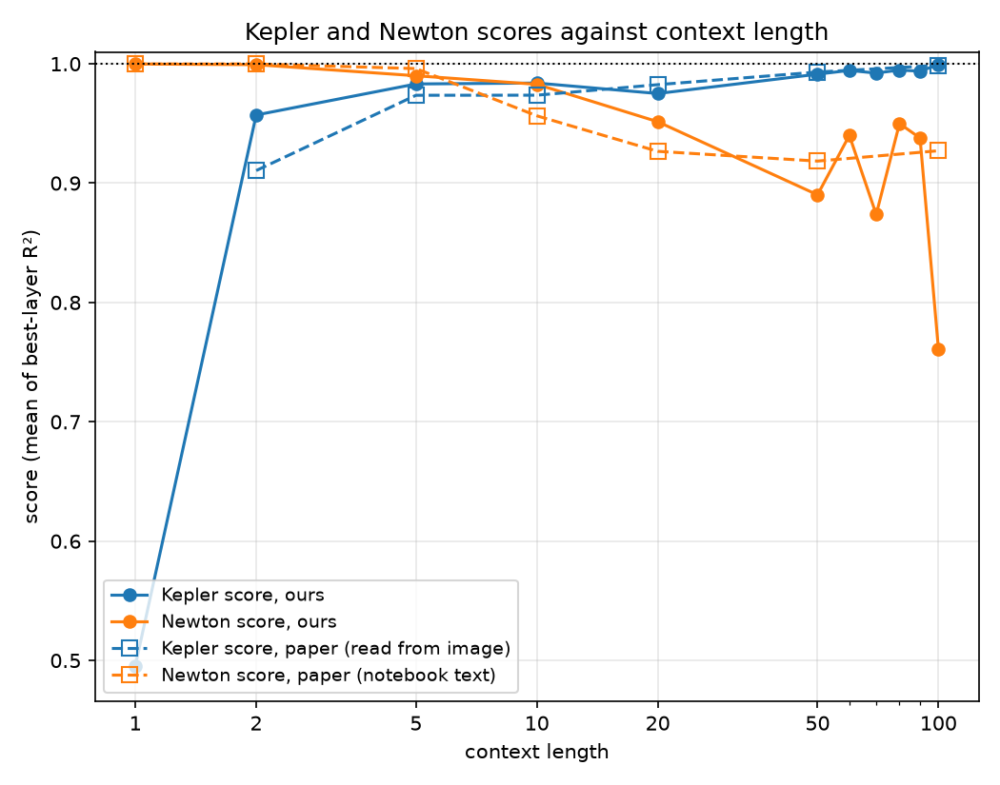
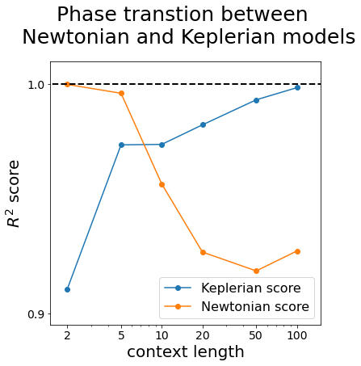
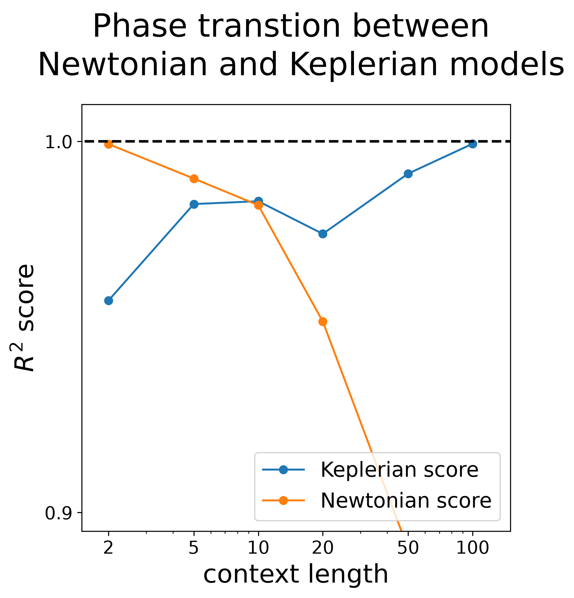
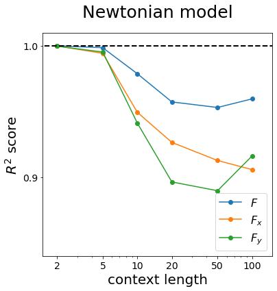
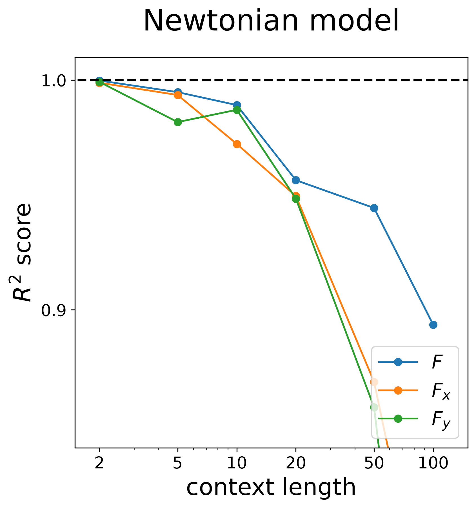
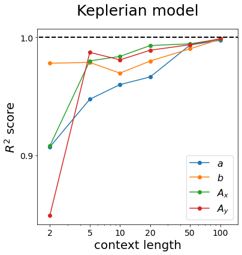
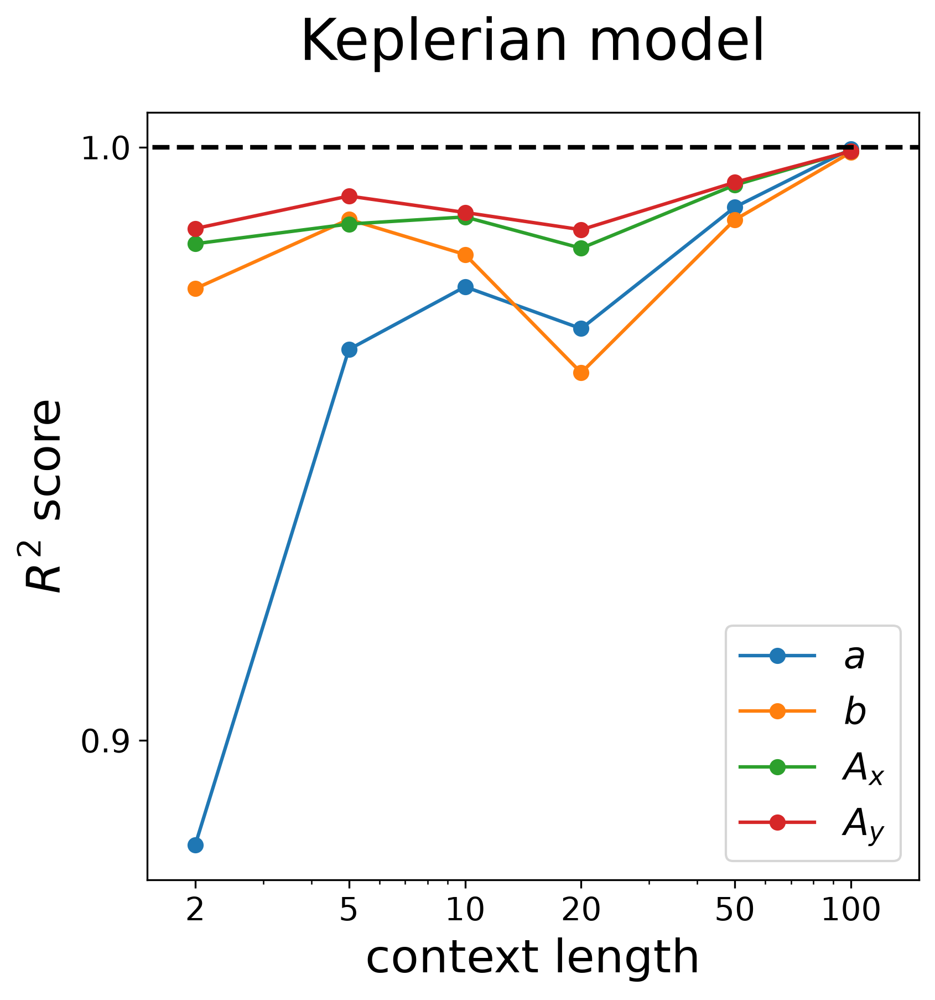
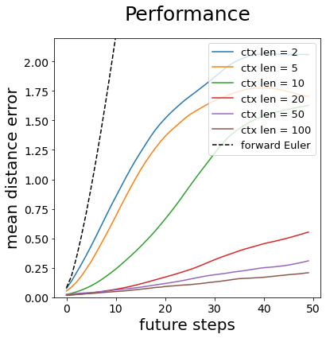
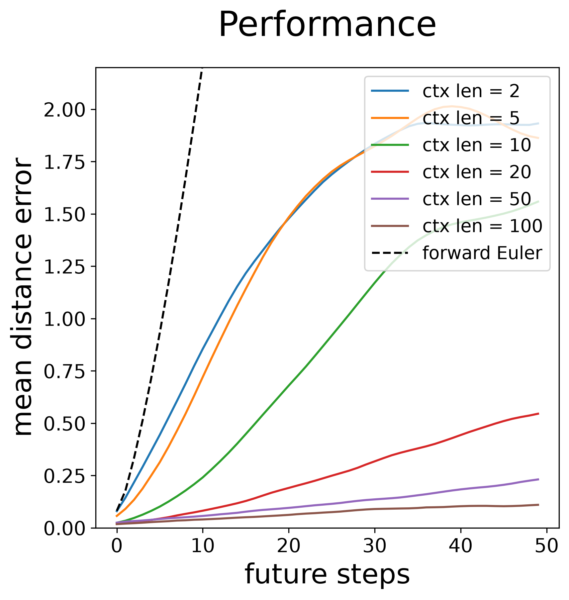
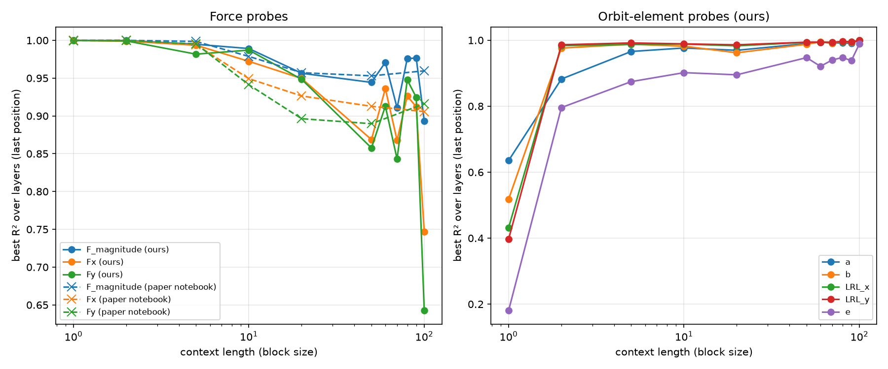

Kepler to Newton: context-length reproduction
This test runs the unchanged code of arXiv 2602.06923 (Fig. 6) for 11 context lengths from 1 to 100, with one seed, on CPU nodes.
Linear-probe R² for the gravity force is high at short context lengths and lower at long ones, and R² for the orbit elements increases with context length.
The Kepler and Newton scores are 0.957 and 0.999 at context length 2 (paper 0.911 and 1.000), and 0.999 and 0.761 at context length 100 (paper 0.999 and 0.927).
| context length | Kepler score (ours) | Kepler score (paper) | Newton score (ours) | Newton score (paper) |
|---|---|---|---|---|
| 1 | 0.496 | - | 1.000 | 1.000 |
| 2 | 0.957 | 0.911 (read from image) | 0.999 | 1.000 |
| 5 | 0.983 | 0.974 (read from image) | 0.990 | 0.996 |
| 10 | 0.984 | 0.974 (read from image) | 0.983 | 0.956 |
| 20 | 0.975 | 0.983 (read from image) | 0.952 | 0.927 |
| 50 | 0.991 | 0.993 (read from image) | 0.890 | 0.918 |
| 60 | 0.994 | - | 0.940 | - |
| 70 | 0.992 | - | 0.874 | - |
| 80 | 0.995 | - | 0.950 | - |
| 90 | 0.994 | - | 0.938 | - |
| 100 | 0.999 | 0.999 (read from image) | 0.761 | 0.927 |










| context length | F magnitude | paper | Fx | paper | Fy | paper | a | b | LRL x | LRL y | e | test error | paper |
|---|---|---|---|---|---|---|---|---|---|---|---|---|---|
| 1 | 0.9999 | 0.9999 | 0.9999 | 0.9998 | 0.9998 | 0.9995 | 0.6352 | 0.5182 | 0.4318 | 0.3973 | 0.1806 | 1.305 | 1.250 |
| 2 | 0.9998 | 1.0000 | 0.9988 | 0.9999 | 0.9992 | 0.9997 | 0.8824 | 0.9761 | 0.9837 | 0.9863 | 0.7958 | 1.413 | 1.464 |
| 5 | 0.9947 | 0.9985 | 0.9935 | 0.9942 | 0.9817 | 0.9952 | 0.9659 | 0.9878 | 0.9870 | 0.9917 | 0.8745 | 1.386 | 1.264 |
| 10 | 0.9891 | 0.9787 | 0.9722 | 0.9493 | 0.9870 | 0.9412 | 0.9764 | 0.9819 | 0.9882 | 0.9890 | 0.9017 | 0.853 | 0.883 |
| 20 | 0.9564 | 0.9572 | 0.9495 | 0.9264 | 0.9484 | 0.8963 | 0.9694 | 0.9619 | 0.9829 | 0.9861 | 0.8951 | 0.257 | 0.252 |
| 50 | 0.9443 | 0.9530 | 0.8687 | 0.9127 | 0.8576 | 0.8897 | 0.9899 | 0.9877 | 0.9936 | 0.9940 | 0.9472 | 0.117 | 0.153 |
| 60 | 0.9708 | - | 0.9362 | - | 0.9129 | - | 0.9941 | 0.9950 | 0.9944 | 0.9943 | 0.9208 | 1.098 | - |
| 70 | 0.9106 | - | 0.8677 | - | 0.8430 | - | 0.9913 | 0.9904 | 0.9937 | 0.9933 | 0.9400 | 1.298 | - |
| 80 | 0.9758 | - | 0.9263 | - | 0.9477 | - | 0.9917 | 0.9953 | 0.9958 | 0.9963 | 0.9476 | 1.296 | - |
| 90 | 0.9766 | - | 0.9121 | - | 0.9247 | - | 0.9903 | 0.9942 | 0.9956 | 0.9950 | 0.9381 | 1.433 | - |
| 100 | 0.8935 | 0.9596 | 0.7471 | 0.9057 | 0.6426 | 0.9161 | 0.9997 | 0.9991 | 0.9993 | 0.9993 | 0.9885 | 0.070 | 0.109 |